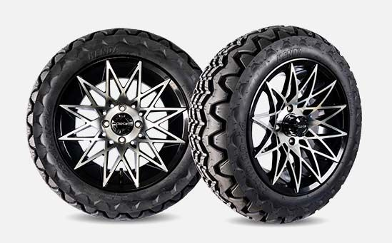
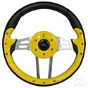
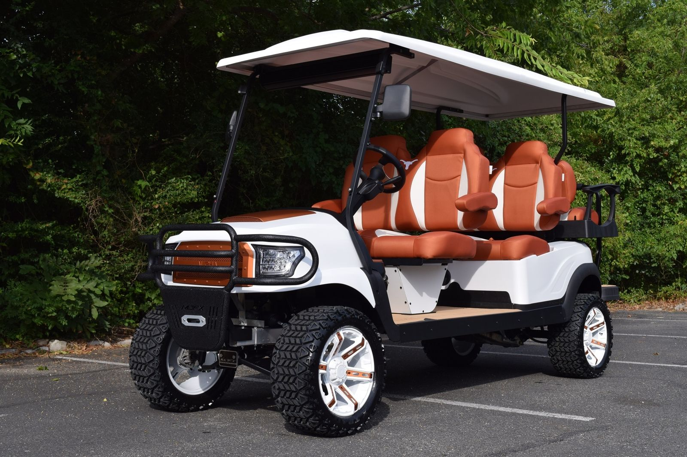

Golf Cart Accessories
Make your cart one of a kind.
As a family-owned, locally owned business, we're here for all of your golf cart parts and accessory needs, with quality products and service. Let's build the custom cart you've always wanted.

Tires & Wheels
8", 10", 12" and 14" wheels, premium tires and color inserts.
Learn more →
Seats
Hundreds of custom seats from several manufacturers, plus arm rests, belts and more.
Learn more →
Lift Kits
The best lift kits in the industry for Club Car, E-Z-GO and Yamaha.
Learn more →
Steering Wheels
Custom wheels to finish your dream cart.
Learn more →
Brush Guards & Windshields
Protect your paint and accessories off the path.
Learn more →
Electronics & Sound
Custom lighting and sound systems. We do it all.
Learn more →Parts & accessories by brand
E-Z-GO
- Golf carts
- Lift kits
- Wheels & tires
- Headlights
- Arm rests
- Windshields
- Fender flares
- Enclosures
- High-performance parts (electric)
- Dash accessories
Yamaha
- Headlights
- Arm rests
- Windshields
- Fender flares
- Lift kits
- Enclosures
- Dash accessories
- Rocker panels
- Accelerator parts
- Air cleaners
Club Car & Tomberlin
- Lift kits
- Wheels & tires
- Seats
- Lighting
- Windshields
- Enclosures
- Batteries
- Sound systems
Looking for a specific part? Call the shop at 832-814-0452.